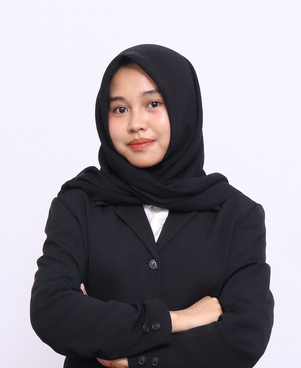

Kemenkeu RI • PT BIMA
12 Proyek
01 / 04
•
PRACTICE LEAD
Husnul Khotimah
Manajemen Risiko & Pemodelan Aktuaria
"Pemodelan volatilitas stokastik, simulasi Monte Carlo, dan analisis stresstest untuk memitigasi eksposur kerugian korporasi secara terukur."
Sorotan Penugasan Utama:
• Analisis Kinerja & Stabilitas DAK Fisik/Dana Desa Pemda Jatim (Volatilitas & K-Means)
• Dashboard Monitoring Kinerja Proyek, Aging Piutang & Capaian RKAP (Looker Studio)
• Analisis Risiko Portofolio Multiaset (ARIMA, Non-Linier, Monte Carlo & MCMC)
Python
R Studio
Monte Carlo
Looker Studio
SPSS 27